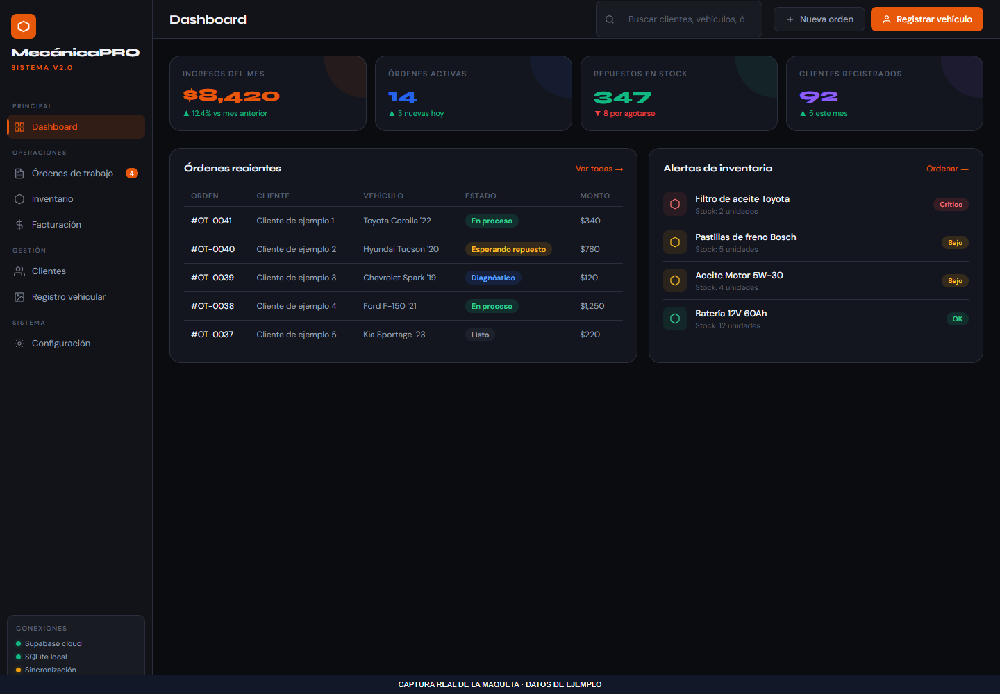
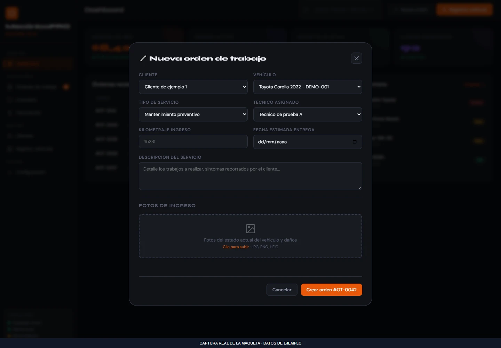
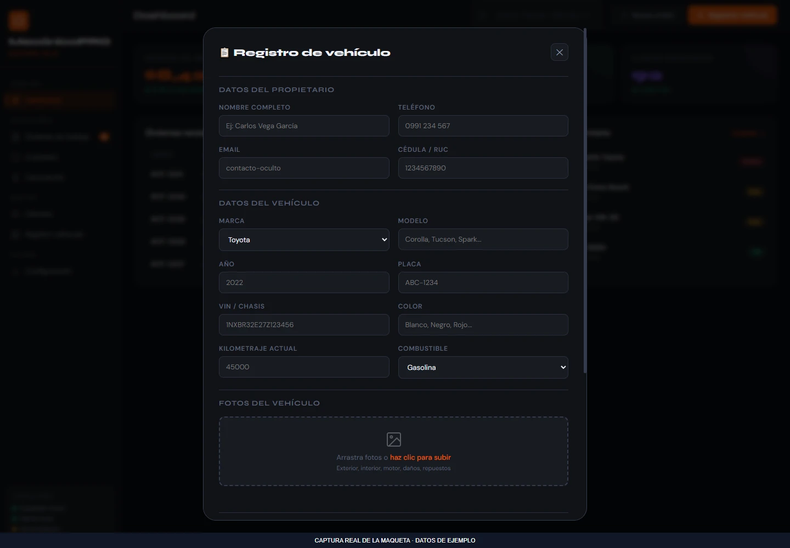

CRM y clientes
DemoMecánicaPRO · interfaz
Maqueta de gestión de taller con navegación entre módulos y formularios de vehículos y órdenes.
Qué resuelve
Maqueta de gestión de taller con navegación entre módulos y formularios de vehículos y órdenes.
Funciones implementadas
- Navegación entre páginas internas
- Apertura y cierre de modales
- Previsualización de fotografías
- Formularios de ingreso e inspección
Demostración pública no disponible. Puedes consultar el alcance o solicitar una presentación.
Consultar sobre este proyecto ↗VISTA DEL PROYECTO
Fotografías y capturas · 3
Selecciona una imagen para ampliarla. Usa las flechas para recorrer la galería.


Ampliar ↗

Ampliar ↗

Ampliar ↗EN LA PRÁCTICA
Recorrido de la interfaz
- 1
Cambiar entre los módulos internos.
- 2
Abrir un formulario de ingreso o de orden.
- 3
Seleccionar fotos para previsualizar el vehículo.
La maqueta no acredita sincronización o persistencia backend.
Añadir fotos a este proyecto ↗
Abre primero el gestor local con python tools/manage_media.py.